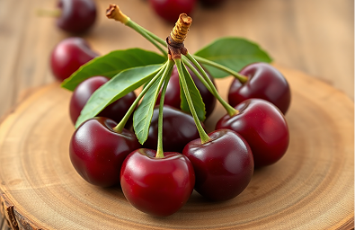
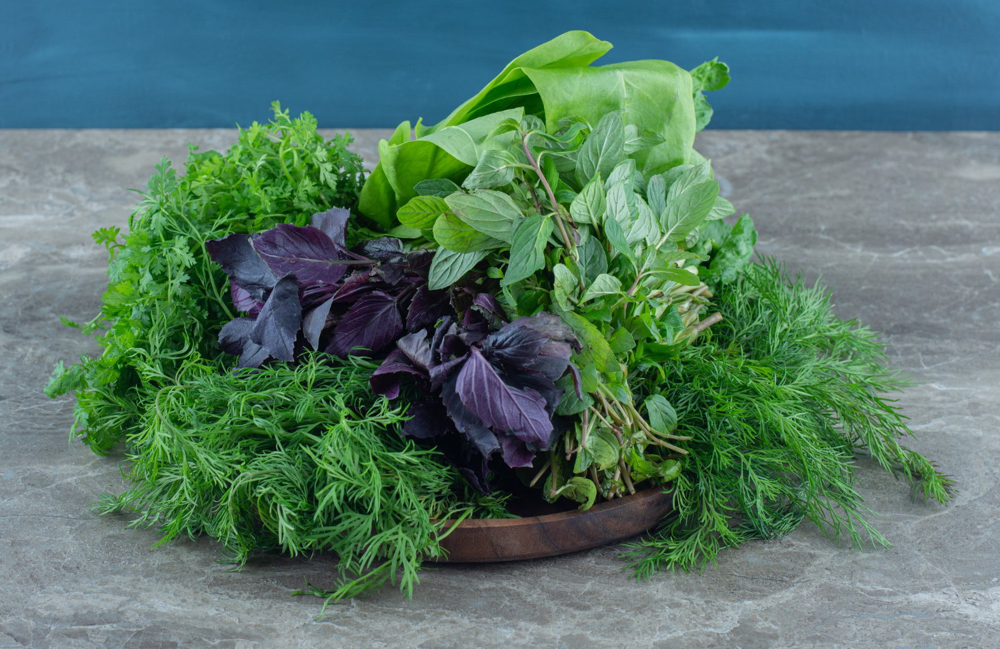

Las mejores cerezas, directamente del árbol a tu mesa
Dulzura y frescura en cada bocado.
Cerezas
Destacamos por la precocidad, recolectamos en la última semana de abril. La mitad de la producción es en secano y la otra mitad con riego deficitario, consiguiendo así un excelente sabor. La cosecha dura de abril a junio.
- 🌱 Origen: Vall de Gallinera
- 🍒 Variedades: Early Lory, Burlat, Brooks
- 📅 Temporada: Abril - Junio
- 😋 Sabor: Dulce e intenso

Albaricoques de la mejor calidad, recolectados en su punto óptimo
Nueces seleccionadas para un sabor y calidad excepcionales
Nueces
Probamos cinco variedades con dos portainjertos distintos, asegurando la mejor calidad en cada cosecha.
- 🌱 Origen: Vall de Gallinera
- 🌰 Variedades: Gales, Tulare, Serr, Hartley, Howard
- 📅 Temporada: Septiembre - Noviembre
- 😋 Sabor: Suave y cremoso

Hierbas comestibles: naturaleza y gastronomía en perfecta armonía
Hierbas comestibles
Proyecto en colaboración con Ignasi Mascarell Camarena, para aprovechar especies silvestres en los frutales.
- 🌱 Origen: Vall de Gallinera
- 🌿 Variedades: Diversas hierbas autóctonas
- 📅 Temporada: Todo el año
- 😋 Sabor: Aromático y versátil
